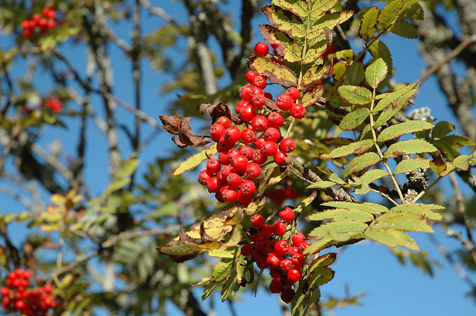

Introduction:
Rowan Trees: Discovering the Elegance and Ecological Value in Nordic Landscapes
Rowan trees, scientifically known as *Sorbus aucuparia*, grace Nordic landscapes with their elegance and ecological significance. In this article, we explore the botanical characteristics, ecological importance, and various uses of these charming trees.
Botanical Characteristics:
Rowan trees are characterized by:
- Pinnately compound leaves with serrated leaflets
- Clusters of small white flowers in spring
- Clusters of vibrant red or orange berries in late summer and autumn

Image of a Rowan Tree
These features contribute to the elegance and recognition of Rowan trees in Nordic landscapes.
Ecological Significance:
Rowan trees hold ecological importance through:
-
Wildlife Support:
Berries are a valuable food source for birds, especially during winter months.
-
Biodiversity:
Rowan trees contribute to the biodiversity of woodlands, providing habitat for insects and small mammals.
-
Ornamental Value:
Rowan trees enhance the aesthetic value of landscapes with their vibrant berries and foliage.
Understanding their ecological role enhances appreciation for Rowan trees in Nordic ecosystems.
Uses:
Beyond their ecological value, Rowan trees offer various uses:
-
Ornamental Planting:
Rowan trees are planted for their aesthetic appeal in gardens and public spaces.
-
Culinary Uses:
Berries can be used in jams, jellies, and beverages, although they are slightly bitter.
-
Traditional Folklore:
Rowan trees have cultural significance and are often associated with folklore and superstitions.